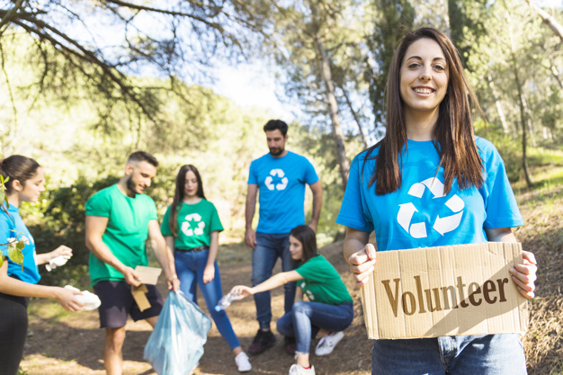
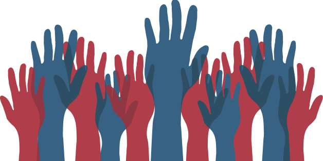

Who are we?
Let us imagine Banat for a moment in which democratic principles rule and institutions function properly, Banat in which no one mentions denied human rights because mutual recognition and tolerance exist. Banat that is so green that ecology is a term we coexist with, Banat that births artists like grain and Banat in which people understand importance and necessity of each of these terms. Seems impossible?
We are the ones that think it is possible!
Confronted with inconceivable insufficiency of mentioned crutial elements necessary for the physical and mental health we have recognised the call for help from the environment we live and create in. As a response to that cry for help we have gathered around the idea of a complete turning point for the ways of civic activism up to this point. That is, full and public transparency of work, not the demagogy of daily politics, open doors for all citizens, not an army under some form of centralized command, real, visible progress and distancing from any sort of populism. Thus, not a reaction to the consequences but an action against the causes.
We belive that personal happiness cannot be grasped if only one individual is happy but if the entire society is happy and with our activism we want to make our Banat happier day by day. We are the ones that will stay here and will change the environment from within rather than go somewhere else. Aleksa Šantić once said :
"Stay Here! The sun of the foreign skies shall
not warm you like this one does;
The taste of bread is bitter there
where no one of yours is, and where your brother is not"
Ecology
Since long ago the forests of Banat have been an exotic sight, Begej has lost it's status as a river due to pollution, the water is unhealthy, it's surroundings are in disorder and wild landfills are the first sight you come across when
Show More
E-mail:
eko-tim@banatski-zaokret.rs
Volunteerism and humanitarian work
We belive that happiness cannot be attained if only an individual is happy but only if the entire society is happy. Because of that and the thing that makes us human, we see the assistance to those who cannot help themselves as a
Show More E-mail:
humani-tim@banatski-zaokret.rs
Culture and education
Duško Radović said that culture is a relationship between people, the way a human behaves towards things and the environment, essence and the point of life, nobility and ennoblement, aspiration towards perfection and the
Show More
E-mail:
kul-tim@banatski-zaokret.rs
Democracy and human rights
A man's sense for justice makes democracy possible, whereas his tendency towards injustice makes democracy necessary, so thought Reinhold Niebuhr. It seems to us that Banat does not lack in injustice, so it is about time we tackle
Show More 